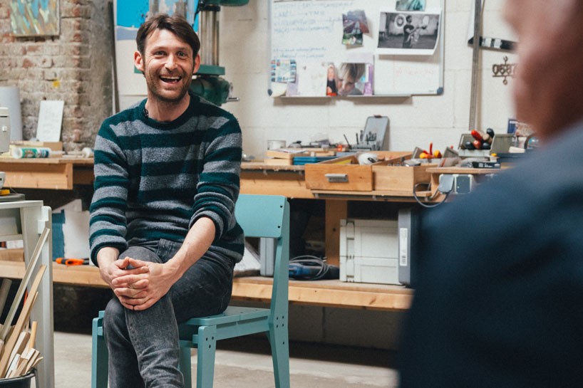

Designer and artist Floris Hovers operates out of Rammsdonksveer in a workshop that has been in his family for generations. He is constantly experimenting with and combining found objects and forms in order to design products and autonomous works.

I want to work with my hands and to do, to think about things I do and to react to the world.